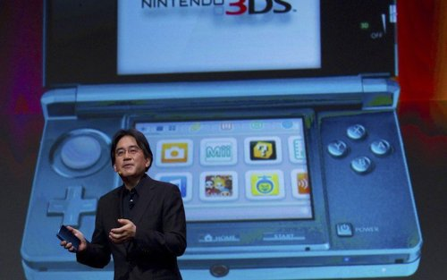

When it was launched in March 2011, the Nintendo 3DS was hailed as a revolution with its glasses-free 3D display, but its high initial price was met with reluctance from consumers. The first few weeks were challenging, and sales levels anticipated.
A 3-D game for a 3-D World.
Tumultuous launch
Price Management
Nintendo was quick to react to the market's reactions. On 28 July 2011, the company took a decisive decision by significantly reducing the price of the Nintendo 3DS. This price revision paved the way for wider adoption, removing the financial barriers that had held back early sales.
Nintendo Ambassador
To appease early adopters who had bought the console at the higher initial price initial price, Nintendo introduced the "Ambassador" programme. Members of this programme, having purchased the 3DS before the price adjustment, were rewarded with free access to classic Game Boy Advance classic Game Boy Advance games and other benefits, reinforcing the relationship between the relationship between the company and its community of gamers.
Major Licenses and Pokemon Expectations
The debut of the Nintendo 3DS was marked by the absence of some major licences. Fans to see their favourite franchises arrive on the console. However, the real turning point came with the release of Pokémon. The arrival of Pokémon on the 3DS was a catalyst that propelled sales to extraordinary heights, attracting a wide audience and reaffirming the 3DS as a must-have console.
The Legacy
The story of the Nintendo 3DS is an example of the video game industry's ability to adapt and evolve. Smart price adjustments, loyalty programmes, and the release of iconic and the release of iconic titles have helped to transform an initially difficult period into an era of continued success. The Nintendo 3DS has left a lasting legacy, underlining the importance of understanding and responding to the dynamic needs of gamers.